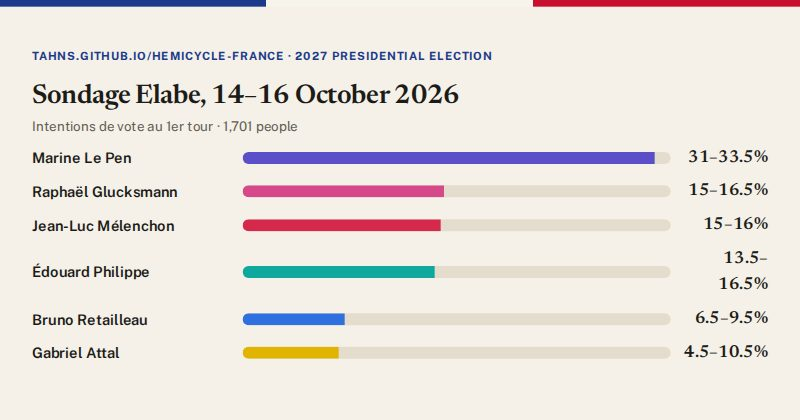

Présidentielle 2027 · sondage
Intentions de vote au 1er tour : Elabe, enquête du 14-16 octobre 2026

| Candidat | Intentions de vote |
|---|---|
| Marine Le Pen | 31 à 33,5 % |
| Raphaël Glucksmann | 15 à 16,5 % |
| Jean-Luc Mélenchon | 15 à 16 % |
| Édouard Philippe | 13,5 à 16,5 % |
| Bruno Retailleau | 6,5 à 9,5 % |
| Gabriel Attal | 4,5 à 10,5 % |
| David Lisnard | 5,5 à 6,5 % |
| Éric Zemmour | 3 à 3,5 % |
| François Ruffin | 3 % |
| Marine Tondelier | 2,5 à 3 % |
| Nicolas Dupont-Aignan | 2 à 3 % |
| Dominique de Villepin | 2 à 3 % |
| Fabien Roussel | 1 à 2 % |
| Natacha Polony | 1,5 % |
| Nathalie Arthaud | 0,5 à 1 % |